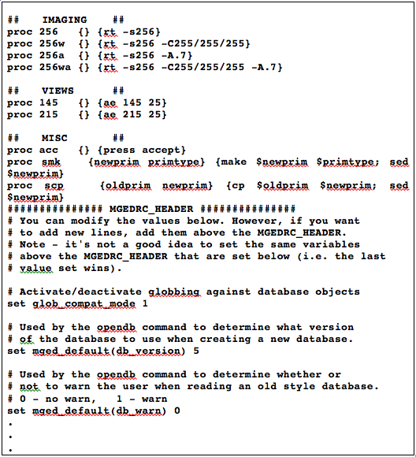
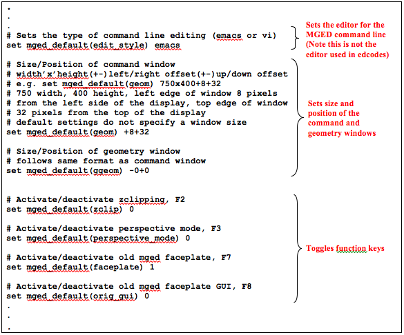
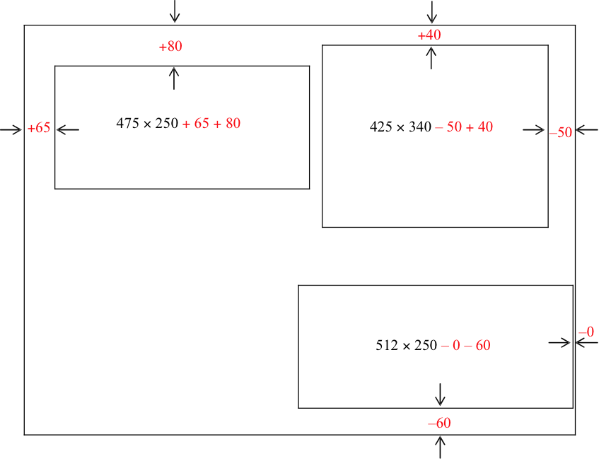

Similar to the preferences or settings options in other computer applications, the .mgedrc file is a useful tool to customize the look and functionality of the U.S. Army Ballistic Research Laboratory - Computer-Aided Design (BRL-CAD) package and minimize potentially time-consuming actions. Using Multi-Device Geometry Editor (MGED) commands and the Tcl/Tk scripting language, users can modify default settings, specify features to be toggled on or off whenever MGED is started, establish typing shortcuts for a command or a series of commands, locate and size the command and geometry windows, and perform a host of other customizations.
The command to create/update a .mgedrc file with the graphical user interface (GUI) is found under the File drop-down menu. When the Create/Update .mgedrc command is called, it writes an extensive list (~500 lines) of default settings and comments representing the default state of the command and graphics windows.
As shown in Figure D-1, there are two basic parts to a .mgedrc file: (1) the information before the MGEDRC_HEADER and (2) the information after the MGEDRC_HEADER. The information before the header is any text created by the user. The information after the MGEDRC_HEADER is written by the Create/Update .mgedrc command and is a comprehensive list of the default settings and options for the MGED user interface. If any edits are made to the .mgedrc text after the header, these changes will be overwritten by the default settings if the Create/Update .mgedrc command is called again. The information before the HEADER, however, is not changed.
|
Note
|
Remember that when creating/updating .mgedrc files, if any conflicting/repeated commands are found, BRL-CAD "obeys" the last command listed. |
In Figure D-1, note that lines have been added before the header to show different raytracing options and the commands have been sectioned into functional divisions separated by comment fields (comment fields are denoted by the symbol "#").

Each command includes the following four basic components:
-
the "proc" (procedure) prefix,
-
a unique name,
-
arguments, and
-
the body (i.e., commands that MGED should execute).
The symbol ";" signifies command separation (a return), and the symbol "$" inserts the value of the subsequently named variable.
The following text discusses some specific examples of the type of shortcuts that can be created by users to expedite common operations such as executing raytraces with particular parameters, accepting and rejecting edits, setting azimuth and elevation, etc.
First, the command to execute a specific kind of raytrace can often be long and tedious to type. For example, if a user wanted to render an image in a window 256 pixels high and wide, with a background color of white, and with the ambient light set to 0.7, the following text would have to be typed:
rt -s256 -C255/255/255 -A.7
However, it is a simple matter to add a line to the user’s .mgedrc file to automate the calling of this instruction. The user’s line might be as follows:
proc 256wa {} {rt -s256 -C255/255/255 -A.7}
Diagrammed, this line breaks down as follows:
proc |
256wa |
{} |
{rt -s256 -C255/255/255 -A.7} |
Denotes that a Tcl procedure is being created. |
Names the procedure 256wa. |
Denotes that there are no arguments. |
Denotes the MGED command that will be executed. The rendering will be 256 pixels square size (as signified by -s), will have a background red-greenblue value of 255 255 255 (as signified by the -C option), and will have an ambient light setting of 0.7 (as signified by the -A option). |
Now, all the user has to type on the command line to execute a rendering with the previously listed options is the following procedure name:
256wa
Note that this name has been intentionally kept short and function-based. It reduces a 27-character command to a 5-character command and provides the user with an idea of the action it performs. The 256 stands for the rt square size, the w stands for a white background, and the a stands for ambient lighting. But this convention is just a suggestion. The user may choose any name that is unique and does not contain words that are reserved for MGED commands (e.g., create).
The .mgedrc file can also be used to create shortcuts for other types of command line or GUI commands. For example, the syntax for creating a shortcut for accepting and rejecting edits from the command line might be as follows:
proc acc {} {press accept}
proc rej {} {press reject}
In addition, a possible shortcut for calling a standard viewing geometry might be as follows:
proc 145 {} {ae 145 25}
And to save the extra selection step when making or copying a primitive, the respective procedure syntax for combining the make and sed commands and copy and sed commands might be as follows:
proc mks {newprim primtype} {make $newprim $primtype; sed $newprim}
and
proc cps {oldprim newprim} {cp $oldprim $newprim; sed $newprim}
Figure D-2 shows a sample section of a .mgedrc file that allows the user to specify the command line editor, customize the window size and placement, and toggle the function keys.

The diagrammed command for sizing and positioning the command window is as follows:
set mged_default |
(geom) |
475 × 250 |
+65 +80 |
Sets MGED command window defaults. |
Specifies command window. |
Sizes the window width to 475 pixels and the height to 250 pixels. |
Denotes window location will be 65 pixels from the left side of the display and 80 pixels from the top edge of the display. |
As illustrated in Figure D-3, to specify the window size, the user inputs width-by-height dimensions for each window (i.e., 475 ×250). To specify the placement of the windows on the display, the user specifies offset distances (i.e., 65 +80) from the edges of the display (as measured in pixels). The first number defines the distance for the left/right placement, and the second number is for the up/down placement. The "" symbol indicates a distance from the left side of the display to the left side of the window or from the top of the display to the top of the window. Alternatively, if a "-" symbol were present (as shown on the right side of Figure D-3), it would indicate a distance from the right side of the display to the right side of the window or from the bottom of the display to the bottom of the window.
